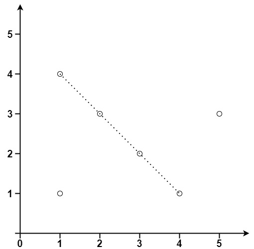

149. 直线上最多的点数
每个点当锚点：其余点相对它的方向 (dx,dy) 约分成最简分数并统一符号后计数，同方向最多者 + 锚点即答案。
思路
- 两点定一线：固定锚点后，同一直线上的点相对锚点的 (dx, dy) 方向相同——按方向计数即可，不用算斜率浮点。
- 方向约分：除以
gcd(|dx|,|dy|)，再统一符号（dx>0，dx==0时dy>0），同一直线只留一种写法；编码成 long 当哈希键。 - 只看
j > i的点：最长线在「线上下标最小的锚点」处取到全局最大；重合点dup对每个方向都 +1。 - 答案 =
best + dup + 1（锚点自己）；单点答案为 1。
图解
最优解
1import java.util.*;2 3class Solution {4 public int maxPoints(int[][] points) {5 int n = points.length, ans = 1;6 // 每个点当锚点：同一直线上的点相对锚点的方向（最简分数 dx:dy）相同7 for (int i = 0; i < n; i++) {8 Map<Long, Integer> cnt = new HashMap<>();9 int dup = 0, best = 0;10 for (int j = i + 1; j < n; j++) {11 int dx = points[j][0] - points[i][0], dy = points[j][1] - points[i][1];12 if (dx == 0 && dy == 0) { dup++; continue; } // 重合点跟哪个方向都算同线13 int g = gcd(Math.abs(dx), Math.abs(dy));14 dx /= g; dy /= g;15 // 符号归一：dx>0；dx==0 时统一 dy>0，同一直线只留一种写法16 if (dx < 0 || (dx == 0 && dy < 0)) { dx = -dx; dy = -dy; }17 long key = (long) dy * 20001 + dx; // |dx|,|dy| ≤ 2e4，编码成唯一 long18 int c = cnt.merge(key, 1, Integer::sum);19 best = Math.max(best, c);20 }21 // 锚点自己 + 重合点 + 最多同方向的点数22 ans = Math.max(ans, best + dup + 1);23 }24 return ans;25 }26 27 private int gcd(int a, int b) { return b == 0 ? a : gcd(b, a % b); }28}题目
给你一个数组 points ，其中 points[i] = [xi, yi] 表示 X-Y 平面上的一个点。求最多有多少个点在同一条直线上。
示例 1：

输入：points = [[1,1],[2,2],[3,3]] 输出：3
示例 2：

输入：points = [[1,1],[3,2],[5,3],[4,1],[2,3],[1,4]] 输出：4
提示：
1 <= points.length <= 300points[i].length == 2-104 <= xi, yi <= 104points中的所有点 互不相同
题面取自力扣当前版本。
数据快照 2026-11-04。题面版权归力扣所有，本站点仅供本人学习使用，请勿对外发布。